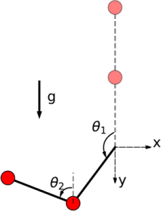

Inverted Two-Link Pendulum
The Inverted Two-Link Pendulum benchmark is a classical inverted pendulum with two links. We consider two different scenarios, which we respectively refer to as the less robust and the more robust scenario.
using ClosedLoopReachability
import OrdinaryDiffEq, Plots, DisplayAs
using ReachabilityBase.CurrentPath: @current_path
using ReachabilityBase.Timing: print_timed
using ClosedLoopReachability: Specification, NoSplitter
using Plots: plot, plot!, xlims!, ylims!The following option determines whether the verification settings should be used in the less robust scenario. The verification settings are chosen to show that the safety property is satisfied, which is expensive in this case. Concretely, we split the initial states into small chunks and run many analyses. Without the verification settings, the analysis is only run for a short time horizon.
const verification = false;The following option determines whether the falsification settings should be used in the more robust scenario. The falsification settings are sufficient to show that the safety property is violated. Concretely, we start from an initial point and use a smaller time horizon.
const falsification = true;Model
The double-link inverted pendulum consists of equal point masses $m$ at the end of connected mass-less links of length $L$. Both links are actuated with torques $T_1$ and $T_2$. We assume viscous friction with coefficient $c$.
The governing equations of motion can be obtained as:
\[\begin{aligned} 2 \ddot θ_1 + \ddot θ_2 cos(θ_2 - θ_1) - \ddot θ_2^2 sin(θ_2 - θ_1) - 2 \dfrac{g}{L} sin(θ_1) + \dfrac{c}{m L^2} \dot{θ}_1 &= \dfrac{1}{m L^2} T_1 \\ \ddot θ_1 cos(θ_2 - θ_1) + \ddot θ_2 + \ddot θ_1^2 sin(θ_2 - θ_1) - \dfrac{g}{L} sin(θ_2) + \dfrac{c}{m L^2} \dot{θ}_2 &= \dfrac{1}{m L^2} T_2 \end{aligned}\]
where $θ_1$ and $θ_2$ are the angles that the links make with the upward vertical axis, $\dot{θ}_1$ and $\dot{θ}_2$ are the angular velocities, and $g$ is the gravitational acceleration. The state vector is $(θ_1, θ_2, \dot{θ}_1, \dot{θ}_2)$. See the picture below for a visualization.

The dynamics are given as first-order differential equations below.
vars_idx = Dict(:states => 1:4, :controls => 5:6)
const m = 0.5
const L = 0.5
const c = 0.0
const g = 1.0
const gL = g / L
const mL = 1 / (m * L^2)
@taylorize function InvertedTwoLinkPendulum!(dx, x, p, t)
θ₁, θ₂, θ₁′, θ₂′, T₁, T₂ = x
Δ12 = θ₁ - θ₂
cos12 = cos(Δ12)
x3sin12 = θ₁′^2 * sin(Δ12)
x4sin12 = θ₂′^2 * sin(Δ12) / 2
gLsin1 = gL * sin(θ₁)
gLsin2 = gL * sin(θ₂)
T1_frac = (T₁ - c * θ₁′) * (0.5 * mL)
T2_frac = (T₂ - c * θ₂′) * mL
bignum = x3sin12 - cos12 * (gLsin1 - x4sin12 + T1_frac) + gLsin2 + T2_frac
denom = cos12^2 / 2 - 1
dx[1] = θ₁′
dx[2] = θ₂′
dx[3] = cos12 * bignum / (2 * denom) - x4sin12 + gLsin1 + T1_frac
dx[4] = -bignum / denom
dx[5] = zero(T₁)
dx[6] = zero(T₂)
return dx
end;We are given two neural-network controllers with 2 hidden layers of 25 neurons each and ReLU activations. Both controllers have 4 inputs (the state variables) and 2 output ($T₁$ and $T₂$).
path = @current_path("InvertedTwoLinkPendulum",
"InvertedTwoLinkPendulum_controller_less_robust.polar")
controller_lr = read_POLAR(path)
path = @current_path("InvertedTwoLinkPendulum",
"InvertedTwoLinkPendulum_controller_more_robust.polar")
controller_mr = read_POLAR(path);The controllers have different control periods: 0.05 (less robust) resp. 0.02 (more robust) time units.
period_lr = 0.05
period_mr = 0.02;Specification
The uncertain initial condition is $(θ_1, θ_2, \dot{θ}_1, \dot{θ}_2) ∈ [1, 1.3]^4$.
The safety specification is that, for all times $t$ for 20 control periods, we have $(θ_1, θ_2, \dot{θ}_1, \dot{θ}_2) ∈ [-1, 1.7]^4$ (less robust scenario) respectively $(θ_1, θ_2, \dot{θ}_1, \dot{θ}_2) ∈ [-0.5, 1.5]^4$ (more robust scenario). A sufficient condition for guaranteed violation is to overapproximate the result with hyperrectangles.
The following script creates a different problem instance for the less robust and the more robust scenario, respectively.
function InvertedTwoLinkPendulum_spec(less_robust_scenario::Bool)
controller = less_robust_scenario ? controller_lr : controller_mr
X₀ = BallInf(fill(1.15, 4), 0.15)
if falsification && !less_robust_scenario
# Choose a single point in the initial states (here: the top-most one):
X₀ = Singleton(high(X₀))
end
U₀ = ZeroSet(2)
period = less_robust_scenario ? period_lr : period_mr
# The control problem is:
ivp = @ivp(x' = InvertedTwoLinkPendulum!(x), dim: 6, x(0) ∈ X₀ × U₀)
prob = ControlledPlant(ivp, controller, vars_idx, period)
# Safety specification:
if less_robust_scenario
box = BallInf(fill(0.15, 4), 1.85)
else
box = BallInf(fill(0.0, 4), 1.5)
end
safe_states = cartesian_product(box, Universe(2))
predicate_set_safe(R) = overapproximate(R, Hyperrectangle) ⊆ safe_states
predicate_set_unsafe(R) = isdisjoint(overapproximate(R, Hyperrectangle), safe_states)
function predicate_safe(sol; silent::Bool=false)
for F in sol, R in F
if !predicate_set_safe(R)
silent || println(" Potential violation for time range $(tspan(R)).")
return false
end
end
return true
end
function predicate_unsafe(sol)
for F in sol, R in F
if predicate_set_unsafe(R)
return true
end
end
return false
end
if less_robust_scenario
predicate = predicate_safe
else
predicate = predicate_unsafe
end
if !verification && less_robust_scenario
# Run for a shorter time horizon if verification is deactivated:
k = 2
elseif falsification && !less_robust_scenario
# Falsification can run for a shorter time horizon:
k = 18
else
k = 20
end
T = k * period # time horizon
spec = Specification(T, predicate, safe_states)
return prob, spec
end;Analysis
To enclose the continuous dynamics, we use a Taylor-model-based algorithm. We also use an additional splitting strategy to increase the precision. These algorithms are defined later for each scenario. To propagate sets through the neural network, we use the DeepZ algorithm:
algorithm_controller = DeepZ();The verification/falsification benchmark (depending on the scenario) is given below:
function benchmark(prob, spec; T, algorithm_plant, splitter, less_robust_scenario, silent::Bool=false)
# Solve the controlled system:
silent || println("Flowpipe construction:")
res = @timed solve(prob; T=T, algorithm_controller=algorithm_controller,
algorithm_plant=algorithm_plant, splitter=splitter)
sol = res.value
silent || print_timed(res)
# Check the property:
silent || println("Property checking:")
if less_robust_scenario
res = @timed spec.predicate(sol; silent=silent)
silent || print_timed(res)
if res.value
silent || println(" The property is verified.")
result = "verified"
else
silent || println(" The property may be violated.")
result = "not verified"
end
else
res = @timed spec.predicate(sol)
silent || print_timed(res)
if res.value
silent || println(" The property is violated.")
result = "falsified"
else
silent || println(" The property may be satisfied.")
result = "not falsified"
end
end
return sol, result
end
function run(; less_robust_scenario::Bool)
if less_robust_scenario
println("# Running analysis with less robust scenario")
algorithm_plant = TMJets(abstol=1e-9, orderT=5, orderQ=1)
splitter = !verification ? BoxSplitter([[1.15], [1.15], Float64[], [1.2]]) :
BoxSplitter([[1.15], [1.15], [1.12, 1.25], [1.05, 1.11, 1.165, 1.21, 1.257]])
T_warmup = 2 * period_lr # shorter time horizon for warm-up run
else
println("# Running analysis with more robust scenario")
algorithm_plant = TMJets(abstol=1e-2, orderT=3, orderQ=1)
splitter = NoSplitter()
T_warmup = 2 * period_mr # shorter time horizon for warm-up run
end
prob, spec = InvertedTwoLinkPendulum_spec(less_robust_scenario)
# Run the verification/falsification benchmark:
benchmark(prob, spec; T=T_warmup, algorithm_plant=algorithm_plant, splitter=splitter,
less_robust_scenario=less_robust_scenario, silent=true) # warm-up
res = @timed benchmark(prob, spec; T=spec.T, algorithm_plant=algorithm_plant, # benchmark
splitter=splitter, less_robust_scenario=less_robust_scenario)
sol, result = res.value
if verification && less_robust_scenario
@assert (result == "verified") "verification failed"
elseif !less_robust_scenario
@assert (result == "falsified") "falsification failed"
end
println("Total analysis time:")
print_timed(res)
# Compute some simulations:
println("Simulation:")
simulations = less_robust_scenario || !falsification
trajectories = simulations ? 10 : 1
res = @timed simulate(prob; T=spec.T, trajectories=trajectories,
include_vertices=simulations)
sim = res.value
print_timed(res)
return sol, sim, prob, spec
end;Run the analysis script for the less robust scenario:
sol_lr, sim_lr, prob_lr, spec_lr = run(less_robust_scenario=true);# Running analysis with less robust scenario
Flowpipe construction:
33.891516 seconds (502.60 M allocations: 21.511 GiB, 27.18% gc time)
Property checking:
0.320797 seconds (5.94 M allocations: 260.475 MiB, 9.23% gc time)
The property is verified.
Total analysis time:
34.220048 seconds (508.54 M allocations: 21.766 GiB, 27.00% gc time, 0.00% compilation time)
Simulation:
1.054896 seconds (2.23 M allocations: 115.023 MiB, 0.00% compilation time)Run the analysis script for the more robust scenario:
sol_mr, sim_mr, prob_mr, spec_mr = run(less_robust_scenario=false);# Running analysis with more robust scenario
Flowpipe construction:
0.613431 seconds (12.66 M allocations: 587.144 MiB, 11.19% gc time)
Property checking:
0.033609 seconds (115.57 k allocations: 5.403 MiB, 68.35% gc time)
The property is violated.
Total analysis time:
0.653401 seconds (12.78 M allocations: 593.222 MiB, 14.03% gc time, 0.00% compilation time)
Simulation:
0.114938 seconds (89.62 k allocations: 4.741 MiB, 0.00% compilation time)Results
Script to plot the results:
function plot_helper(vars, sol, sim, prob, spec; lab_sim="")
safe_states = spec.ext
fig = plot()
plot!(fig, project(safe_states, vars); color=:lightgreen, lab="safe")
plot!(fig, sol; vars=vars, color=:yellow, lw=0, alpha=1, lab="")
plot!(fig, project(initial_state(prob), vars); c=:cornflowerblue, alpha=1, lab="X₀")
plot_simulation!(fig, sim; vars=vars, color=:black, lab=lab_sim)
return fig
end;Plot the results:
vars = (1, 2)
fig = plot_helper(vars, sol_lr, sim_lr, prob_lr, spec_lr)
plot!(fig; xlab="θ₁", ylab="θ₂")
# Command to save the plot to a file:
# Plots.savefig(fig, "InvertedTwoLinkPendulum-less-robust-x1-x2.png")
fig = DisplayAs.Text(DisplayAs.PNG(fig))vars = (3, 4)
fig = plot_helper(vars, sol_lr, sim_lr, prob_lr, spec_lr)
plot!(fig; xlab="θ₁'", ylab="θ₂'")
# Command to save the plot to a file:
# Plots.savefig(fig, "InvertedTwoLinkPendulum-less-robust-x3-x4.png")
fig = DisplayAs.Text(DisplayAs.PNG(fig))vars = (3, 4)
lab_sim = falsification ? "simulation" : ""
fig = plot_helper(vars, sol_mr, sim_mr, prob_mr, spec_mr; lab_sim=lab_sim)
plot!(fig; xlab="θ₁'", ylab="θ₂'")
# Command to save the plot to a file:
# Plots.savefig(fig, "InvertedTwoLinkPendulum-more-robust.png")
fig = DisplayAs.Text(DisplayAs.PNG(fig))